Blood Diamond
Realisateur:Edward Zwick
|
|
|
Edward M. Zwick (né le 8 octobre 1952) est un cinéaste et producteur américain de cinéma
et de télévision. Il a travaillé principalement dans la comédie dramatique et film historique
épique genres, y compris About Last Night , Glory , Legends of the Fall , et The Last Samurai .
Il est également le co-créateur des séries télévisées trentenaire et Once and Again .
|
|
Acteur:Leonardo DiCaprio
|
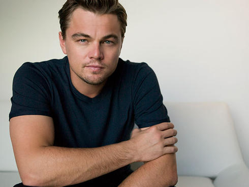
|
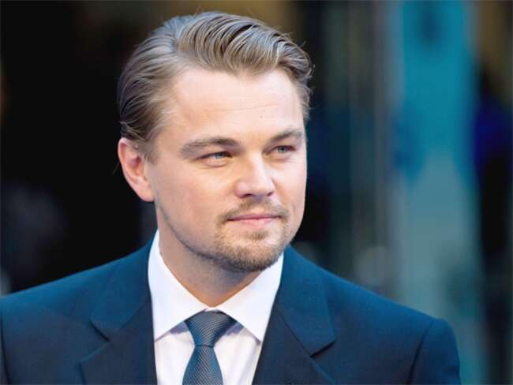
|
Leonardo Wilhelm DiCaprio , né le 11 Novembre, 1974) est un acteur américain, producteur de
films et environnementaliste . Il a souvent joué des rôles non conventionnels, notamment dans
des biopics et des films d'époque. En 2019 , ses films ont rapporté 7,2 milliards de dollars
dans le monde et il s'est classé huit fois dans le classement annuel des acteurs les mieux payés au monde.
|
|
Acteur:Djimon Hounsou
|
|
|
Djimon Gaston Hounsou, né le 24 Avril 1964) Son [2] est un acteur béninois-américain et le modèle.
Il a commencé sa carrière en apparaissant dans des vidéoclips. Il a fait ses débuts au cinéma dans
Sans toi, je ne suis rien (1990) et a obtenu une large reconnaissance pour son rôle de Cinqué dans
le film réalisé par Steven Spielberg Amistad (1997). Il a gagné en reconnaissance pour ses rôles
dans Gladiator (2000), In America(2003) et Blood Diamond (2006), recevant les nominations aux Oscars
du meilleur second rôle pour ces deux derniers films. Il a également joué un antagoniste dans
Furious 7 (2015). Il a été nominé pour un Golden Globe Award et trois Screen Actors Guild Awards .
Il joue également un rôle important dans le film français Forces spéciales (2011).
|
|
|
Molière
Realisateur:Laurent Tirard
|
|
|
Laurent Tirard (né le 18 Février 1967) est un français réalisateur et scénariste .
|
|
Acteur:Romain Duris
|
|
|
Romain Duris ; né le 28 mai 1974 est un acteur français .
Il est surtout connu pour son rôle dans Cédric Klapisch de Appartement espagnole trilogie,
qui se compose de L'Auberge Espagnole (2002), Les Poupées russes (2005), et casse - tête chinois (2013).
Il est également apparu dans Iris (2016) et All the Money in the World (2017).
|
|
Acteur:Fabrice Luchini
|
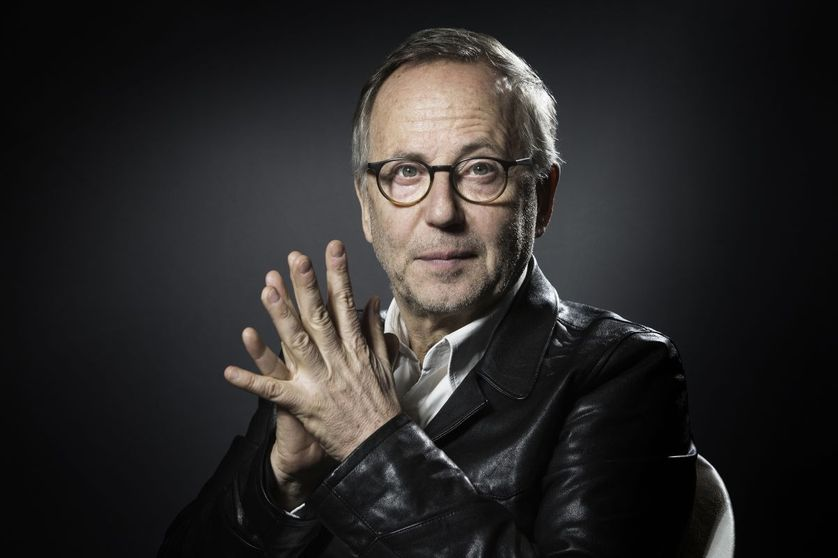
|
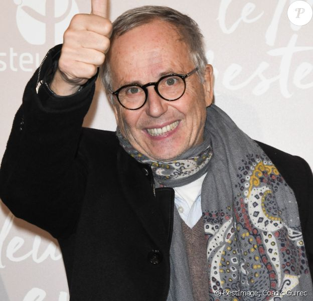
|
Fabrice Luchini , né Robert Luchini 1; Novembre 1951 est une scène française et acteur film.
Il est apparu dans des films tels que Potiche , The Women on the 6th Floor et In the House .
Pour son rôle dans le film Courted en 2015, il a remporté la Coupe Volpi du meilleur acteur
au 72e Festival international du film de Venise .
|
|
|
À la recherche du bonheur
(The Pursuit of Happyness)
Realisateur:Gabriele Muccino
|
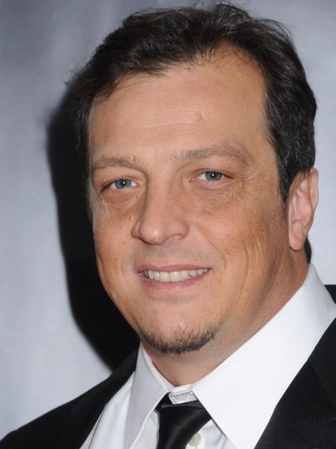
|
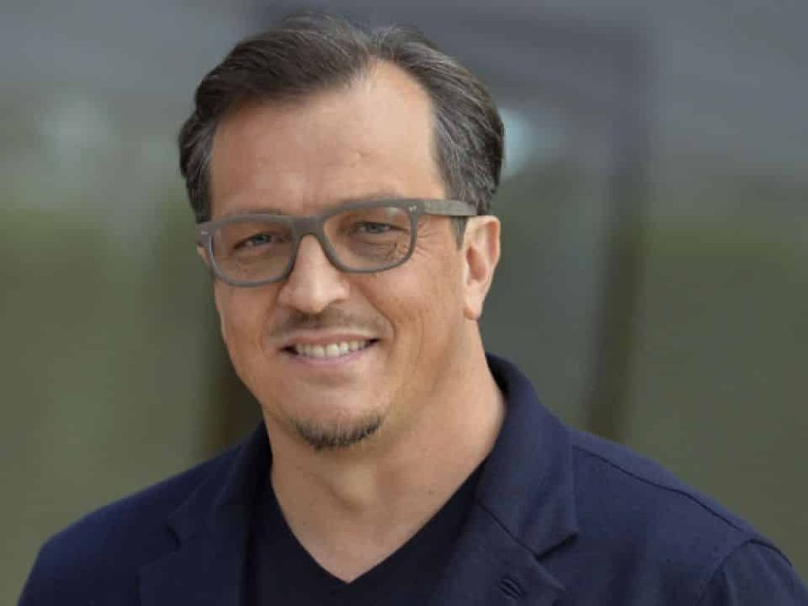
|
Fils de Luigi Muccino, dirigeant RAI, et Antonella Cappuccio, peintre affirmée, Gabriele Muccino
naît et grandit à Rome, où il s'inscrit à la faculté de lettres et philosophie à l'Université La
Sapienza de Rome avant de se consacrer au cinéma comme assistant volontaire pour Pupi Avati et
Marco Risi. En 1991, il est admis au Centro Sperimentale di Cinematografia où il fréquente les cours de scénario.
Ensuite, il commence à travailler pour la RAI en réalisant trois courts métrages et quelques épisodes du soap
opera Un posto al sole. En 1996, il participe au film collectif Intolerance et en 1998, il débute avec le long
métrage avec Ecco fatto qui est nommé au Festival du film de Turin. Après quelques spots pour la télévision
arrive le deuxième long métrage, Come te nessuno mai en 1999, dans lequel il fait débuter comme acteur son
petit frère Silvio. Le film sera sélectionné à la Mostra de Venise.
En 2001, Gabriele Muccino retrouve le succès avec Juste un baiser (L'ultimo bacio), qui gagne cinq David di
Donatello parmi lesquels le Prix au meilleur réalisateur et le Prix du public au Sundance Film Festival.
Le magazine Entertainment Weekly nomme le film parmi les dix meilleur titres de l'année.
Après sa troisième œuvre Souviens-toi de moi (Ricordati di me), Muccino débarque aux États-Unis où il réalise
deux films avec Will Smith acteur principal et producteur, À la recherche du bonheur
(The Pursuit of Happyness) (2006) et Sept vies (Seven Pounds) (2008). L'acteur américain avait choisi personnellement Muccino
après avoir vu Juste un baiser (L'ultimo bacio).
|
|
Acteur:Will Smith
|
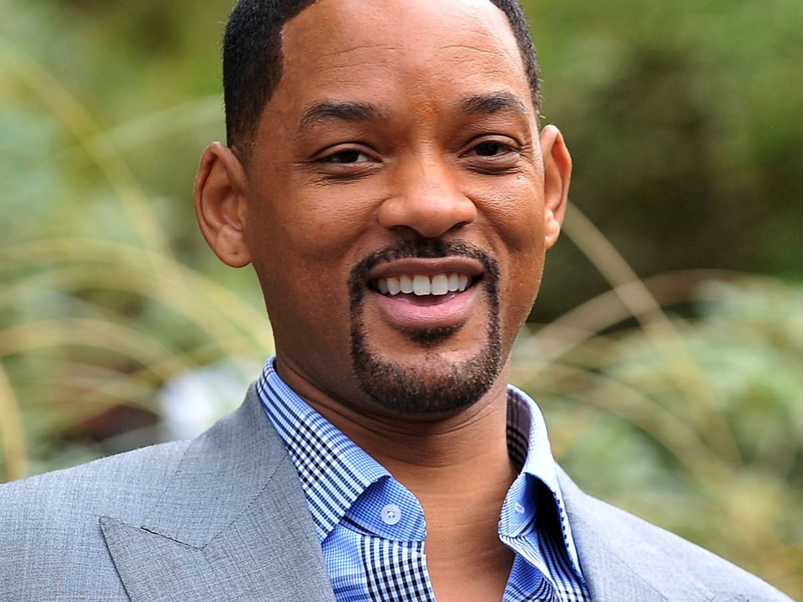
|
|
Willard Smith, alias Will Smith, est un acteur, chanteur et producteur de cinéma américain,
né le 25 septembre 1968 à Philadelphie en Pennsylvanie.
Il est l'un des rares artistes à avoir connu le succès dans trois différents médias de divertissement
aux États-Unis et dans le monde : cinéma, télévision et musique. Il est devenu rapidement célèbre en
tenant le rôle-titre de la série télévisée Le Prince de Bel-Air au début des années 1990, puis en
s'imposant au cinéma avec quelques blockbusters à succès comme Bad Boys (1995), Independence Day (1996),
Men in Black (1997) puis Ennemi d'État (1998).
À la suite du flop de Wild Wild West (1999), il accepte de tourner dans deux suites : Men in Black 2 (2002)
et Bad Boys 2 (2003), mais s'essaie également à un cinéma plus dramatique : le mélodrame La Légende
de Bagger Vance (2001) de Robert Redford puis Ali (2001) de Michael Mann, qui lui vaut une nomination
à l'Oscar du meilleur acteur en 2002.
Il privilégie ensuite des projets plus commerciaux : la comédie Hitch, expert en séduction (2005), les
blockbusters de science-fiction I, Robot (2004), Je suis une légende (2007) et Hancock (2008). Il porte
aussi deux mélodrames réalisés par Gabriele Muccino : À la recherche du bonheur (2006), qui lui vaut sa seconde
nomination à l'Oscar du meilleur acteur, puis Sept vies (2008).
Il est alors l'un des acteurs les mieux payés d'Hollywood avec 80 millions de dollars gagnés entre le 1er juin 2007
et le 1er juin 2008 et le seul acteur à avoir tourné dans huit films classés premiers au box-office américain dès leur
premier week-end de diffusion.
Les années 2010 sont cependant plus difficiles : après le succès Men in Black 3 (2012), ses nouveaux blockbusters :
After Earth (2013), Un amour d'hiver (2014), Diversion (2015), Suicide Squad (2016) et Bright (2017) - comme ses projets
plus intimistes - Seul contre tous (2015) et Beauté cachée (2016) - sont très mal reçus par la critique.
En 2019, Aladdin, l’adaptation en prise de vues réelle du film homonyme de 1992, dans lequel il incarne le Génie,
devient le plus gros succès au box-office de sa carrière. En 2020, il reprend son rôle dans Bad Boys for Life.
|
|
Acteur:Thandie Newton
|
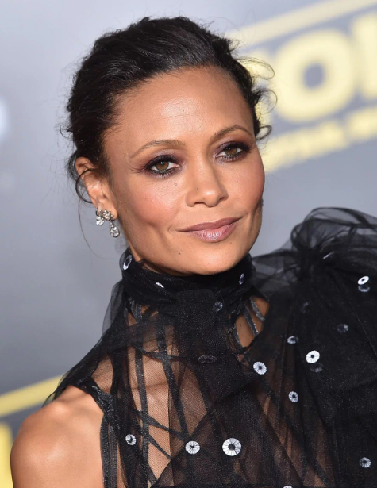
|
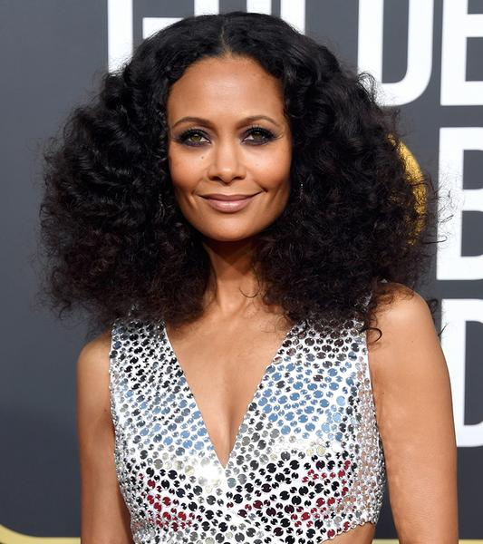
|
Melanie Thandiwe Newton dite Thandiwe Newton (anciennement Thandie Newton), née le 6 novembre 1972
à Londres, est une actrice britannique.
Menant de front, une carrière entre le cinéma britannique et le cinéma américain, elle est révélée,
au grand public, dans le blockbuster d'action Mission impossible 2 (2000).
Elle reçoit d'excellentes critiques pour son interprétation dans le drame acclamé Collision (2004),
qui lui vaut l'Empire Award de la meilleure actrice, ainsi que le BAFTA Award de la meilleure actrice
dans un rôle secondaire et le London Critics' Circle Film Awards. Elle joue également dans la comédie
dramatique à succès, À la recherche du bonheur (2006).
Entre 2003 et 2005, elle joue dans la célèbre série médicale Urgences.
Durant la décennie suivante, elle participe au drame romantique plébiscité Les Couleurs du destin.
Mais c’est son retour télévisuel, à partir de 2016, qui lui permet de recevoir les éloges, grâce à
son interprétation convaincante de Maeve Millay, une gynoïde, dans la série de science-fiction Westworld.
Elle remporte le Critics' Choice Television Awards de la meilleure actrice dans un second rôle dans une
série télévisée dramatique et elle est nommée, notamment aux Golden Globes et aux Screen Actors Guild Awards.
Également détentrice du Primetime Emmy Award de la meilleure actrice dans un second rôle dans une série télévisée
dramatique, elle profite du succès de la série pour faire son retour sur grand écran en étant à l’affiche de
longs métrages tels que Gringo, Ma vie avec John F. Donovan et Solo: A Star Wars Story.
|
|
|
L’ile aux Tresors
Realisateur:Alain BerbÉrian
|
|
|
Mr Alain BerbÉrian est un realisateur
|
|
Acteur:GÉrard Jugnot
|
|
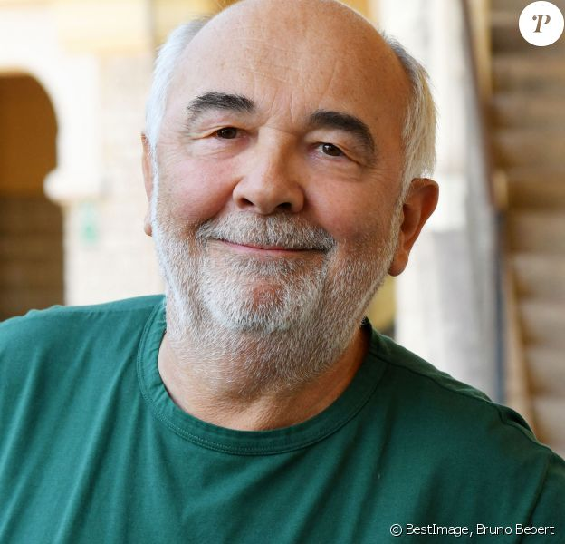
|
Gérard Jugnot, né le 4 mai 1951 est un acteur français, réalisateur, scénariste et producteur de films.
Jugnot a été l'un des fondateurs de la troupe de comédie Le Splendid dans les années 1970, avec, entre
autres, ses amis de lycée Christian Clavier , Thierry Lhermitte et Michel Blanc . Puis Josiane Balasko
et Marie-Anne Chazel les ont rejoints. Le groupe adapte plusieurs de ses succès de scène au cinéma et
remporte un vif succès dans des films tels que Les Bronzés (1978), Les Bronzés font du ski (1979) et
Le Père Noël est une ordure (1982).
Jugnot a acquis une renommée internationale pour son rôle principal dans Les Choristes dans lequel il
incarne Clément Mathieu. Le dernier film qu'il a réalisé était C'est beau la vie quand on y pense (2017).
Jugnot est le père du comédien Arthur Jugnot , né en 1980 de Jugnot et de la créatrice de vêtements Cécile Magnan .
Il a été fait Chevalier (Chevalier) de la Légion d'honneur en 2004.
|
|
Acteur:Alice Taglioni
|
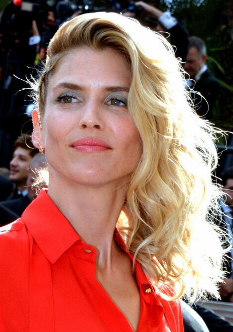
|
|
Alice Taglioni (née le 26 juillet 1976) est une actrice française née à Ermont , Val-d'Oise .
Née 26 juillet 1976 (44 ans)
Ermont , Val-d'Oise , France
|
|
|
Snow Cake
Realisateur:Marc Evans
|
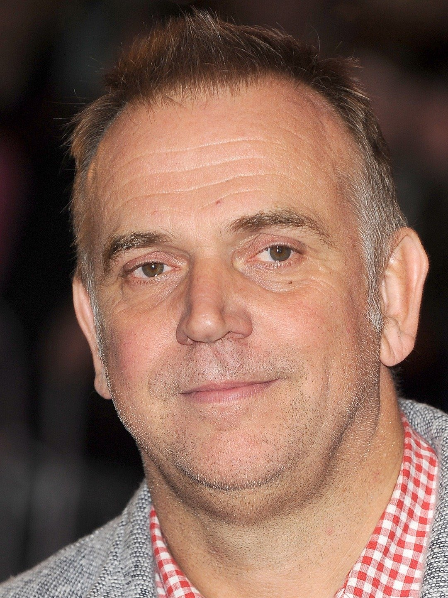
|
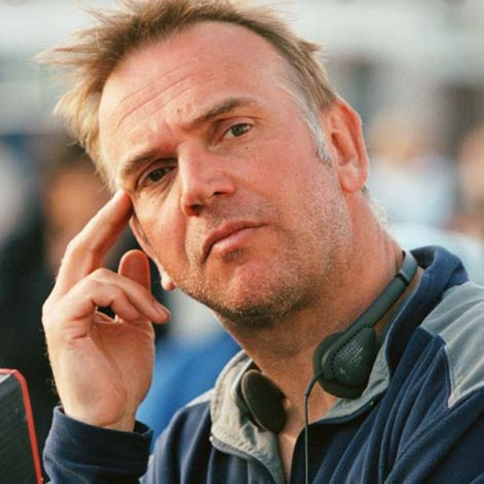
|
Marc Evans (né en 1963) est un réalisateur gallois de cinéma et de télévision, dont les crédits incluent les films House of America , Resurrection Man et My Little Eye . Née 1963 (57-58 ans)
Cardiff , Pays de Galles
Occupation: Réalisateur, producteur, scénariste de cinéma et de télévision
|
|
Acteur:Sigourney Weaver
|
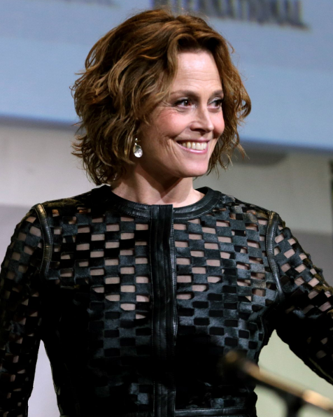
|
|
Susan Alexandra " Sigourney ", est une actrice américaine. Weaver est considérée comme une pionnière des héroïnes d'action dans les
films de science-fiction . [2] Elle est connue pour jouer Ellen Ripley dans l' Alien franchise , qui lui a valu une Oscar
nomination en 1986 et est souvent considéré comme l' un des plus importants protagonistes féminins de l'histoire du cinéma.
Née Susan Alexandra Weaver 8 octobre 1949 (71 ans) New York, États-Unis
Sept fois nominée aux Golden Globe Awards , Weaver a remporté à la fois la meilleure actrice dans un drame et la meilleure actrice
dans un second rôle en 1988 pour son travail dans les films Gorillas in the Mist et Working Girl , devenant ainsi la première personne
à remporter deux Golden Globes d'acteur la même année. . Elle a également reçu des nominations aux Oscars pour les deux films. Pour
son rôle dans le film The Ice Storm (1997), elle a remporté le BAFTA Award de la meilleure actrice dans un second rôle .
Elle a également reçu une nomination aux Tony Awards pour son travail dans la pièce de Broadway Hurlyburly en 1984 .
Les autres rôles au cinéma de Weaver incluent Ghostbusters (1984), Ghostbusters II (1989), Dave (1993), Galaxy Quest (1999),
Holes (2003), WALL-E (2008), Avatar (2009), Prayers for Bobby (2009) , Paul (2011), La cabane dans les bois (2012) et A Monster
Calls (2016) ; et la mini-série télévisée Political Animals (2012) et The Defenders (2017).
En 2003, Weaver a été élue numéro 20 dans le compte à rebours de Channel 4 des 100 plus grandes stars de cinéma de tous les temps,
étant l'une des deux seules femmes du Top 20.
|
|
Acteur:Alan Rickman
|
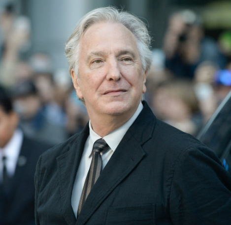
|
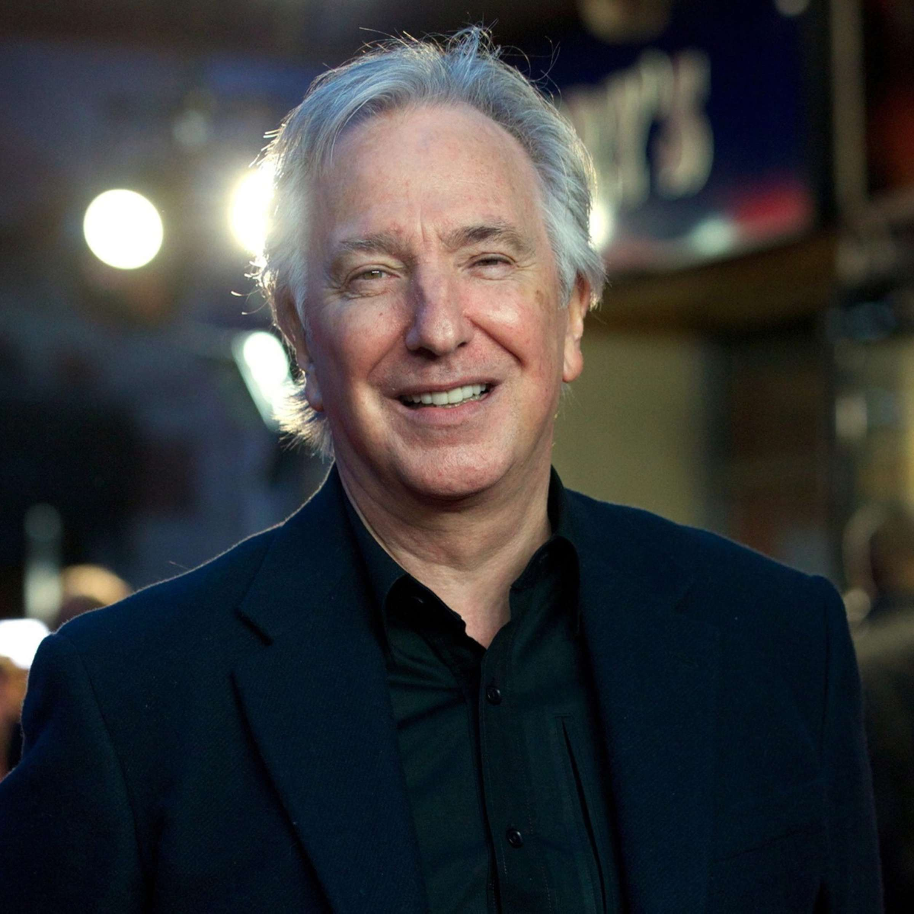
|
Alan Sidney Patrick Rickman (21 février 1946 - 14 janvier 2016) était un acteur et réalisateur anglais. Connu pour sa voix grave et
langoureuse , il s'est formé à la Royal Academy of Dramatic Art de Londres et est devenu membre de la Royal Shakespeare Company (RSC),
se produisant dans des productions théâtrales modernes et classiques. Il a joué le Vicomte de Valmont dans la production théâtrale
RSC des Liaisons Dangereuses en 1985, et après le transfert de la production au West End en 1986 et à Broadway en 1987, il a été nominé
pour un Tony Award .
Née 21 février 1946 Londres , Angleterre
Décédés 14 janvier 2016 (69 ans) Londres, Angleterre
Le premier rôle au cinéma de Rickman est venu lorsqu'il a été choisi pour incarner le leader terroriste allemand Hans Gruber dans Die
Hard (1988). Il est également apparu en tant que shérif de Nottingham dans Robin Hood : Prince of Thieves (1991), pour lequel il a reçu
le BAFTA Award du meilleur acteur dans un second rôle ; Elliott Marston dans Quigley Down Under (1990); Jamie dans Vraiment, follement,
profondément (1990); PL O'Hara dans Une terrible aventure (1995); Colonel Brandon dans Sense and Sensibility (1995); Alexander Dane
dans Galaxy Quest (1999) ; Métatron dans le dogme(1999); Severus Rogue dans la série Harry Potter (2001-2011) ; Harry dans l' amour
en fait (2003) ; Marvin the Paranoid Android dans The Hitchhiker's Guide to the Galaxy (2005); et le juge Turpin dans Sweeney Todd :
The Demon Barber of Fleet Street (2007).
Rickman a fait ses débuts agissant de la télévision en jouant Tybalt dans Roméo et Juliette (1978) dans le cadre de la BBC de la
série Shakespeare . Son rôle décisif était dans l'adaptation télévisée de la BBC de The Barchester Chronicles (1982). Il a ensuite
joué dans des téléfilms, interprétant le personnage principal de Rasputin: Dark Servant of Destiny (1996), qui lui a valu un
Golden Globe Award , un Emmy Award et un Screen Actors Guild Award , et le Dr Alfred Blalock dans Something the Lord Made (2004).
Rickman est décédé d' un cancer du pancréas le 14 janvier 2016 à l'âge de 69 ans. Ses derniers rôles au cinéma étaient le
lieutenant-général Frank Benson dans le thriller Eye in the Sky (2015), et reprenant son rôle de voix de la chenille
d' Alice au pays des merveilles (2010) dans Alice Through the Looking Glass (2016).
|
|
|


.jpg)